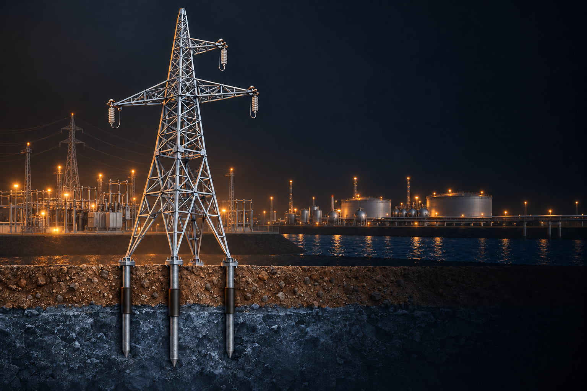

ОСПТ «Релайн» / Электроэнергетика
ЛЭП на свайных фундаментах
Защита опор от морозного пучения
Оболочка ОСПТ «Reline» защищает сваи от морозного пучения и коррозии.

ОСПТ «Релайн» / Электроэнергетика
Защита опор от морозного пучения
Оболочка ОСПТ «Reline» защищает сваи от морозного пучения и коррозии.